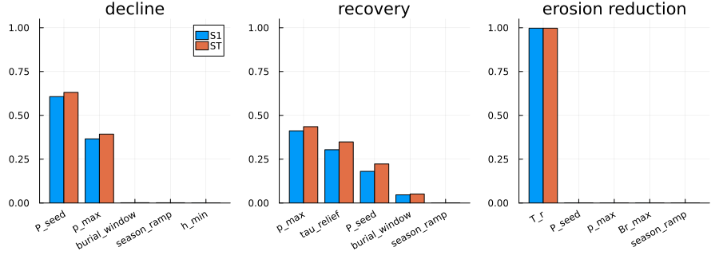
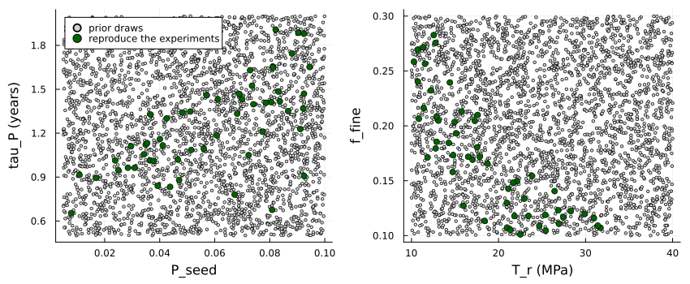

Uncertainty in the marram grass model
Simon Frost
Overview
Every trait of the marram grass model has an evidence grade (marram_info):
- M traits were measured on marram;
- D traits were fitted to experiments (vignette 13);
- P traits are priors, with no direct measurement.
This vignette asks how much the priors matter, in three steps: 1. a Sobol analysis over the priors, which shows which unknowns drive which predictions; 2. history matching, which keeps only the prior draws that still reproduce the calibration experiments; 3. predictions, with ranges, from the trait sets that remain: first for one cell, then for the foredune and storm of vignette 14.
ENV["GKSwstype"] = "100"
using Aeolis
using Dates
using Plots
using Printf
using QuasiMonteCarlo
using Random
using Statistics
const AE = AeolisThree predictions for one cell
A stand at half its maximum density goes through three phases of sand supply:
- years 0-4: 0.3 m of sand per growing season, about the optimum;
- years 4-7: none;
- year 7 onward: 0.3 m per season again.
Three predictions are read from this run:
- decline: the shoot density after three years without sand, relative to that at year 4;
- recovery: the shoot density a year after burial resumes, relative to that at year 4;
- erosion reduction: how much the roots of the year-4 stand reduce wave erosion of the dune,
c_r / (tau0 + c_r).
function predictions(tr)
z(t) = (4 * 365 <= t < 7 * 365) ? 0.0 : 0.3 / AE.season_length(tr)
N0 = 0.5 * tr.N_max
cell = MarramCell(; N=N0, h=0.5, Br=AE.root_target(N0, 0.3, tr), zr=0.5, s=tr.s_fc)
sol = simulate_marram(cell, (t, d) -> (; dzb=z(t), s=tr.s_fc), tr; days=8 * 365,
start=Date(2020, 1, 1))
i4, i7, i8 = 4 * 365 + 1, 7 * 365 + 1, 8 * 365 + 1
return [sol.N[i7] / sol.N[i4], sol.N[i8] / sol.N[i4], sol.cr[i4] / (tr.tau0 + sol.cr[i4])]
end
labels = ["decline", "recovery", "erosion reduction"]
round.(predictions(MarramTraits()); digits=3)3-element Vector{Float64}:
0.739
0.832
0.338Which priors matter
The Sobol indices of a prediction split its variance among the traits:
- the first-order index
S1is the share that a trait causes alone; - the total index
STadds its interactions with the other traits.
They are computed here with the estimators of Saltelli et al. (2010) (first order) and Jansen (1999) (total). The design is one scrambled Sobol sequence in twice as many dimensions as there are traits, split into the two matrices the estimators need.
function sobol_indices(f, lb, ub, n)
k = length(lb)
X = QuasiMonteCarlo.sample(n, vcat(lb, lb), vcat(ub, ub),
SobolSample(; R=OwenScramble(; base=2, pad=32)))
A, B = X[1:k, :], X[(k + 1):end, :]
fA = reduce(hcat, [f(A[:, j]) for j in 1:n])
fB = reduce(hcat, [f(B[:, j]) for j in 1:n])
V = vec(var(hcat(fA, fB); dims=2))
S1 = zeros(size(fA, 1), k)
ST = zeros(size(fA, 1), k)
for i in 1:k
ABi = copy(A)
ABi[i, :] .= B[i, :]
fABi = reduce(hcat, [f(ABi[:, j]) for j in 1:n])
S1[:, i] .= vec(mean(fB .* (fABi .- fA); dims=2)) ./ V
ST[:, i] .= vec(mean((fA .- fABi) .^ 2; dims=2)) ./ 2 ./ V
end
return (; S1, ST)
end
nothingAs a check, on the Ishigami function the indices are known exactly: S1 = 0.314, 0.442 and 0, and ST = 0.558, 0.442 and 0.244.
Random.seed!(1)
ish(x) = [sin(x[1]) + 7 * sin(x[2])^2 + 0.1 * x[3]^4 * sin(x[1])]
check = sobol_indices(ish, fill(-float(pi), 3), fill(float(pi), 3), 4096)
println("S1 ", round.(check.S1[1, :]; digits=3), ", ST ", round.(check.ST[1, :]; digits=3))S1 [0.306, 0.443, -0.005], ST [0.557, 0.442, 0.244]The analysis covers the priors that act in a single cell. Colonisation and drag act only on a grid, and the ensemble below covers them.
grid_only = (:f_jump, :jump_distance, :N_new, :h_new, :zr_new, :establishment, :kappa)
priors = filter(r -> !(r.name in grid_only), marram_ranges())
names = [r.name for r in priors]
base = MarramTraits()
Random.seed!(2)
sobol = sobol_indices(x -> predictions(MarramTraits(base, names, x)),
[r.low for r in priors], [r.high for r in priors], 2048)
plots = map(1:3) do k
order = sortperm(sobol.ST[k, :]; rev=true)[1:5]
pos = 1:5
p = bar(pos .- 0.2, max.(sobol.S1[k, order], 0); bar_width=0.4, label="S1",
title=labels[k], ylims=(0, 1.05), legend=k == 1)
bar!(p, pos .+ 0.2, sobol.ST[k, order]; bar_width=0.4, label="ST",
xticks=(pos, string.(names[order])), xrotation=30)
end
plot(plots...; layout=(1, 3), size=(900, 320), bottom_margin=8Plots.mm)
for k in 1:3
order = sortperm(sobol.ST[k, :]; rev=true)[1:3]
@printf("%-18s %s\n", labels[k],
join([@sprintf("%s %.2f", names[j], sobol.ST[k, j]) for j in order], ", "))
enddecline P_seed 0.63, p_max 0.39, burial_window 0.00
recovery p_max 0.44, tau_relief 0.35, P_seed 0.22
erosion reduction T_r 1.00, P_seed 0.00, p_max 0.00Each prediction is driven by one or two unknowns:
- decline by the seed of the soil-biota build-up,
P_seed, and the strength of the pressure,p_max; - recovery by those two and by how fast fresh sand relieves pressure,
tau_relief; - erosion reduction almost entirely by the tensile strength of marram roots,
T_r, which has never been measured.
These are the measurements that would most improve the model.
History matching
Some D traits were fitted with the priors held at their defaults. For example, the time scale of soil-biota pressure tau_P was fitted with P_seed and p_max at theirs. Drawing the priors independently can therefore give trait sets that no longer reproduce the experiments.
So the priors are drawn 3000 times, together with the three D traits fitted with them: tau_P, d_f and the fine-root fraction f_fine. A draw is kept only if it still reproduces three experiments:
- the shoots of the mesocosm of Reijers et al. (2021), within 15 % in all three treatments;
- the burial response of Nolet et al. (2018) below the optimum, with a root-mean-square difference below 0.05;
- the erosion reduction of a mature stand, between 26 and 41 %. That is the 31-36 % of marram in flume and core experiments (Kosmalla et al. 2026; De Battisti and Griffin 2020), widened by 5 points.
function plausible(tr)
e = marram_experiment(:reijers2021, tr)
all(abs.(e.shoots ./ e.shoots_observed .- 1) .< 0.15) || return false
n = marram_experiment(:nolet2018, tr)
below = n.burial .<= tr.burial_opt
ndvi = vec(mean(n.ndvi_observed; dims=2))
sqrt(mean(abs2, n.response[below] .- ndvi[below])) < 0.05 || return false
return 0.26 <= marram_experiment(:root_erosion, tr).stand_reduction <= 0.41
end
draws = marram_sample(Xoshiro(7), 3000; add=(:tau_P, :d_f, :f_fine))
kept = filter(plausible, draws)
@printf("%d of %d draws reproduce the experiments\n", length(kept), length(draws))54 of 3000 draws reproduce the experimentsAbout 2 % of the draws survive, because the calibration data tie the traits together. The kept draws show how:
p1 = scatter([d.P_seed for d in draws], [d.tau_P for d in draws]; ms=2, color=:lightgray,
label="prior draws", xlabel="P_seed", ylabel="tau_P (years)")
scatter!(p1, [d.P_seed for d in kept], [d.tau_P for d in kept]; ms=4, color=:darkgreen,
label="reproduce the experiments")
p2 = scatter([d.T_r for d in draws], [d.f_fine for d in draws]; ms=2, color=:lightgray,
legend=false, xlabel="T_r (MPa)", ylabel="f_fine")
scatter!(p2, [d.T_r for d in kept], [d.f_fine for d in kept]; ms=4, color=:darkgreen)
plot(p1, p2; layout=(1, 2), size=(850, 350), bottom_margin=5Plots.mm, left_margin=5Plots.mm)
corr(a, b) = cor([getfield(d, a) for d in kept], [getfield(d, b) for d in kept])
@printf("correlation among kept draws: P_seed and tau_P %.2f, T_r and f_fine %.2f\n",
corr(:P_seed, :tau_P), corr(:T_r, :f_fine))correlation among kept draws: P_seed and tau_P 0.66, T_r and f_fine -0.82Two relationships stand out:
- A larger seed of soil biota needs a slower build-up (
tau_P). This keeps the mesocosm, on fresh sand, from declining in its first year. - Stronger roots need fewer fine roots. The erosion experiments fix only the product of tensile strength
T_rand the fine-root fractionf_fine, not each one.
Predictions with ranges
For one cell, the three predictions under the prior and under the kept trait sets:
q(v) = quantile(v, [0.05, 0.5, 0.95])
prior_pred = reduce(hcat, predictions.(draws[1:500]))
kept_pred = reduce(hcat, predictions.(kept))
for k in 1:3
a, b = q(prior_pred[k, :]), q(kept_pred[k, :])
@printf("%-18s prior %.2f (%.2f-%.2f); kept %.2f (%.2f-%.2f)\n", labels[k], a[2], a[1],
a[3], b[2], b[1], b[3])
enddecline prior 0.73 (0.38-0.95); kept 0.70 (0.62-0.81)
recovery prior 0.74 (0.47-0.93); kept 0.70 (0.56-0.85)
erosion reduction prior 0.47 (0.28-0.65); kept 0.36 (0.30-0.41)The numbers are medians with 5-95 % ranges. The experiments narrow all three predictions:
- decline and recovery, through the soil-biota traits;
- the erosion reduction, through the product of root strength and fine-root fraction.
For the foredune, 32 of the kept trait sets are run through two years of the vignette 14 beach and then its storm, as an EnsembleProblem. Each member reads its traits from its own file (write_marram_traits).
day = 86400.0
years = 2
rng = Xoshiro(1)
x = collect(0.0:1.0:150.0)
zb0 = @. min(-1.0 + x / 25, 3.0)
nd = 365 * years + 1
td = (0:(nd - 1)) .* day
wind = hcat(td, [7.0 / 0.886 * sqrt(-log(rand(rng))) for _ in td],
[270.0 + 80 * (rand(rng) - 0.5) for _ in td])
tt = collect(0.0:3600.0:(nd * day))
tide = hcat(tt, sin.(2pi .* tt ./ (12.42 * 3600)))
doy = [(k % 365) + 1 for k in 0:(nd - 1)]
water = hcat(td, [rand(rng) < 0.45 ? -4.9 * log(rand(rng)) : 0.0 for _ in td],
@. 2.0 - 1.5 * cos(2pi * (doy - 15) / 365))
base_run = (; xgrid_file=x, bed_file=zb0, ne_file=(@. ifelse(x >= 126, zb0, -10.0)),
th_nelayer=true, wind_file=wind, tide_file=tide, process_tide=true,
grain_size=0.0003, dt=3600.0, tstop=years * 365day, output_times=365day,
refdate="2020-01-01 00:00", process_avalanche=true, output_vars=[:zb],
process_vegetation=true, veg_model=:marram,
veg_file=(@. ifelse(110 <= x <= 125, 0.3, 0.0)), veg_water_file=water)
dir = mktempdir()
members = 32
files = [write_marram_traits(joinpath(dir, "member$i.toml"), kept[i]) for i in 1:members]
inert = [write_marram_traits(joinpath(dir, "inert$i.toml"), MarramTraits(kept[i]; tau0=1e12))
for i in 1:members]
grow = EnsembleProblem(AeolisProblem(AeolisParameters(; base_run...));
prob_func=(pr, ctx) -> remake(pr; veg_traits_file=files[ctx.sim_id]))
grown = solve(grow, EulerBackward(), AE.SciMLBase.EnsembleThreads(); trajectories=members)
t0 = years * 365day
storm = (; tstart=t0, tstop=t0 + 2day, output_times=2day,
wind_file=[0.0 2.0 270.0; 4000day 2.0 270.0], tide_file=[0.0 2.5; 4000day 2.5],
wave_file=[0.0 3.0 10.0; 4000day 3.0 10.0], process_wave=true, process_runup=true,
process_dune_erosion=true, dune_toe_elevation=2.7, beach_slope=0.04)
storm_prob = AeolisProblem(AeolisParameters(; base_run..., storm...))
function eroded(traitfiles)
ep = EnsembleProblem(storm_prob;
prob_func=(pr, ctx) -> remake(pr; u0=grown.u[ctx.sim_id].u,
veg_traits_file=traitfiles[ctx.sim_id]))
es = solve(ep, EulerBackward(), AE.SciMLBase.EnsembleThreads(); trajectories=members)
return [sum(max.(grown.u[i].u.zb[:, 2] .- es.u[i].u.zb[:, 2], 0.0)) for i in 1:members]
end
with_roots = eroded(files)
without_roots = eroded(inert)
volume = [sum(max.(s.u.zb[101:end, 2] .- 3.0, 0.0)) for s in grown.u]
for (lab, v) in (("dune volume after 2 years (m³/m)", volume),
("storm erosion with roots (m³/m)", with_roots),
("storm erosion without roots (m³/m)", without_roots),
("reduction by roots", 1 .- with_roots ./ without_roots))
a = q(v)
@printf("%-36s %.2f (%.2f-%.2f)\n", lab, a[2], a[1], a[3])
enddune volume after 2 years (m³/m) 37.80 (34.82-42.06)
storm erosion with roots (m³/m) 27.16 (24.08-30.39)
storm erosion without roots (m³/m) 35.66 (32.84-39.96)
reduction by roots 0.25 (0.14-0.32)These ranges are the uncertainty left by the priors once the calibration experiments are respected. They do not include:
- uncertainty in the M and D traits themselves;
- uncertainty in the forcing, a single synthetic weather series here;
- uncertainty in AeoLiS’s own transport and erosion parameters.
The analysis also points to the measurements that would narrow the ranges most:
- how fast soil biota build up and how strongly they act (
P_seed,p_max); - how fast fresh sand relieves them (
tau_relief); - the tensile strength and fine-root fraction of marram roots, which the erosion data cannot separate.
De Battisti, Davide, and John N. Griffin. 2020. “Below-Ground Biomass of Plants, with a Key Contribution of Buried Shoots, Increases Foredune Resistance to Wave Swash.” Annals of Botany 125: 325–34. https://doi.org/10.1093/aob/mcz125.
Jansen, Michiel J. W. 1999. “Analysis of Variance Designs for Model Output.” Computer Physics Communications 117: 35–43. https://doi.org/10.1016/S0010-4655(98)00154-4.
Kosmalla, Viktoria, Oliver Lojek, Lukas Ahrenbeck, et al. 2026. “Vegetation Effects on Dune Erosion Under Wave Collision: Influence of Planting Density, Biomass Distribution and Arrangement in Scaled Experiments.” Coastal Engineering 204: 104899. https://doi.org/10.1016/j.coastaleng.2025.104899.
Nolet, Corjan, Marinka van Puijenbroek, Juha Suomalainen, Juul Limpens, and Michel Riksen. 2018. “UAV-Imaging to Model Growth Response of Marram Grass to Sand Burial: Implications for Coastal Dune Development.” Aeolian Research 31: 50–61. https://doi.org/10.1016/j.aeolia.2017.08.006.
Reijers, Valérie C., Selwyn Hoeks, Jim van Belzen, et al. 2021. “Sediment Availability Provokes a Shift from Brownian to L<span class="nocase">évy</span>-Like Clonal Expansion in a Dune Building Grass.” Ecology Letters 24: 258–68. https://doi.org/10.1111/ele.13638.
Saltelli, Andrea, Paola Annoni, Ivano Azzini, Francesca Campolongo, Marco Ratto, and Stefano Tarantola. 2010. “Variance Based Sensitivity Analysis of Model Output. Design and Estimator for the Total Sensitivity Index.” Computer Physics Communications 181: 259–70. https://doi.org/10.1016/j.cpc.2009.09.018.